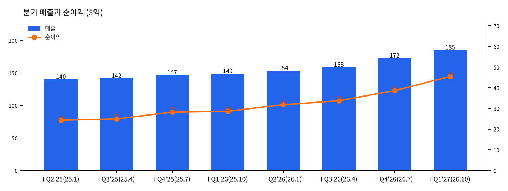
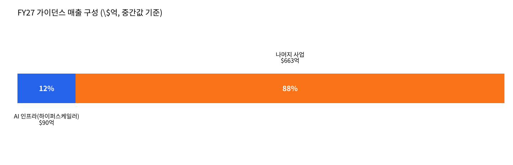
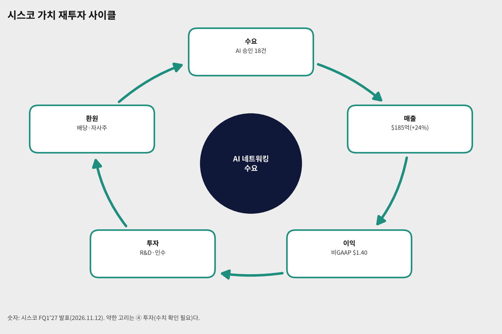

시스코는 스위치·라우터 등 네트워크 장비와 보안·협업 제품을 파는 회사다. 하이퍼스케일러 AI 데이터센터 수요가 새로운 성장 동력이 됐다.
| 항목 | 내용 |
|---|---|
| 종목 | Cisco Systems (CSCO) · NASDAQ · 네트워크·보안 · 캘리포니아 새너제이 |
| 멀티플 | PER·P/S는 08·09 항목 표 참조 |
| 최근 분기(FQ1'27) | 매출 $185억(+24%), 비GAAP EPS $1.40 |
| 가이던스(FY27) | 매출 $748~758억, 비GAAP EPS $5.47~5.53 |
| 직원 수 | 약 82,400명(트레이딩뷰) |
| 직책 | 인물 | 역할·특징 |
|---|---|---|
| 회장·CEO | 척 로빈스(Chuck Robbins) | AI 에이전트가 네트워크 대역폭을 크게 소비한다고 설명 |
| CFO | 마크 패터슨(Mark Patterson) | 매출보다 이익이 훨씬 빠르게 늘 영업 레버리지를 언급 |
경영 스타일: 'AI 네트워킹 슈퍼사이클 + 이익 레버리지'. 하이퍼스케일러 AI 설계 승인을 5분기에 18건 확보했고 기업 캠퍼스 교체 주기도 겹쳤다고 설명한다.
AI 클러스터용 스위치·광학 설계 승인 18건(5분기), 클라우드 컨트롤 플랫폼 약 6,000개 고객.
AI 에이전트가 사람보다 네트워크 대역폭을 450% 더 쓴다는 자체 연구를 근거로 인프라 수요 확대를 전망한다.
다음 실적발표는 세 가지 질문에 답하는 자리다.
1. AI 인프라 매출 $90억 목표가 달성되나?
2. AI 외 사업의 성장이 이어지나?
3. 영업 레버리지가 이어지나?
한 줄 판정 규칙: 첫 질문(AI 목표)과 둘째 질문(AI 외 성장)이 모두 이어지면 약한 고리(AI 편중)가 풀린다.
일정: FQ2'27 실적 발표는 트레이딩뷰 기준 2027.02.17(확인 필요).
| 분기 | 매출 | 순이익 | EPS | 조정 EPS | 특이 사항 |
|---|---|---|---|---|---|
| FQ2'25(25.1) | $139.9억 | $24.3억 | 0.61 | 0.94 | |
| FQ3'25(25.4) | $141.5억 | $24.9억 | 0.62 | 0.96 | |
| FQ4'25(25.7) | $146.7억 | $28.2억 | 0.71 | 0.99 | |
| FQ1'26(25.10) | $148.8억 | $28.6억 | 0.72 | 1.00 | |
| FQ2'26(26.1) | $153.5억 | $31.8억 | 0.80 | 1.04 | |
| FQ3'26(26.4) | $158.4억 | $33.7억 | 0.85 | 1.06 | |
| FQ4'26(26.7) | $172.5억 | $38.6억 | 0.97 | 1.22 | |
| FQ1'27(26.10) | $185.2억 | $45.5억 | 1.14 | 1.40 | 비GAAP EPS $1.40, 매출 가이던스 상단 초과 |
FQ1'27(2026.10 종료) 매출 $185억(+24%), GAAP EPS $1.14, 비GAAP EPS $1.40(회사 발표, 2026.11.12). 매출·순이익·EPS(GAAP 희석)는 트레이딩뷰 스캐너, 조정 EPS는 트레이딩뷰 실적 페이지의 Reported 값이다. 분기 정렬은 오래된 분기→최신이다.

흐름 요약: 최근 분기 매출은 $185.2억로 전년 동기 $148.8억 대비 +24.5%, 순이익은 $45.5억(전년 $28.6억)다. 최근 4분기 GAAP EPS는 $3.76, 조정 EPS는 $4.72다.
| 구분 | 내용 | FY27 가이던스 매출 | 비고 |
|---|---|---|---|
| 하이퍼스케일러 AI 인프라 | AI 데이터센터 스위치·광학 | $90억 | 목표 |
| 나머지 사업(내 계산) | 캠퍼스·보안·협업·서비스 등 | 약 $663억 | 가이던스 중간값 $753억 − $90억 |

FY27 가이던스 중간값 $753억 중 하이퍼스케일러 AI 인프라가 약 12%(내 계산)다. 나머지 사업이 아직 대부분이다.
시스코는 'AI 시대의 네트워크·보안 인프라를 제공해 고객의 연결과 보호를 책임지는 것'을 목표로 한다.
| 축 | 내용 |
|---|---|
| AI | FY27 AI 인프라 매출 $90억 목표 |
| 캠퍼스 | 캠퍼스 네트워크 교체 주기 |
| 보안 | 방화벽 주문 +30%, AI 방어 약 500개 고객 |

| 이동평균 | 값 | 종가 대비 | 위치 |
|---|---|---|---|
| 5일선 | $96.89 | +0.3% | 종가 위 |
| 20일선 | $101.81 | -4.5% | 종가 아래 |
| 50일선 | $106.94 | -9.1% | 종가 아래 |
| 100일선 | $110.48 | -12.0% | 종가 아래 |
| 200일선 | $102.57 | -5.3% | 종가 아래 |
52주 고가 $130.37(2026-06-04)·저가 $72.80(2026-01-12) 범위에서 종가 $97.18는 5일선을 웃돌고 20일선, 50일선, 100일선, 200일선은 밑돈다.
| 규칙 | 기준 | 현재 값 | 신호 |
|---|---|---|---|
| 장기 추세 필터 | 종가 vs 200일선 | $97.18 < $102.57 | 매도 |
| 중장기 교차 | 50일선 vs 200일선 | $106.94 > $102.57 | 매수 |
| 단기 교차 | 20일선 vs 50일선 | $101.81 < $106.94 | 매도 |
| 돈키언 채널 | 55일 고가 $118.65 / 저가 $93.35 | 중간값 $106.00 아래 | 매도 |
| 1개월 모멘텀 | 21거래일 수익률 | -8.9% (기준 $106.71) | 매도 |
| 3개월 모멘텀 | 63거래일 수익률 | -11.3% (기준 $109.59) | 매도 |
| 6개월 모멘텀 | 126거래일 수익률 | -15.0% (기준 $114.35) | 매도 |
| 12개월 모멘텀 | 252거래일 수익률 | +24.9% (기준 $77.78) | 매수 |
| 종합 (8개 평균) | -0.50 | 매도 |
해석: 매수 신호 2개(중장기 교차, 12개월 모멘텀), 매도 신호 6개(장기 추세 필터, 단기 교차, 돈키언 채널, 1개월 모멘텀, 3개월 모멘텀, 6개월 모멘텀). CTA 점수 -0.50(매도). 14일 ATR $4.26 (4.4%), 52주 고가 $130.37 · 저가 $72.80.
| 가격 | 기준 | 무엇이 바뀌나 |
|---|---|---|
| $118.65 | 55일 고가 | 돌파 시 채널 상단 갱신 |
| $114.35 | 6개월 모멘텀 기준가 | 종가가 이 가격 위면 6개월 신호 매수 |
| $109.59 | 3개월 모멘텀 기준가 | 종가가 이 가격 위면 3개월 신호 매수 |
| $106.71 | 1개월 모멘텀 기준가 | 종가가 이 가격 위면 1개월 신호 매수 |
| $106.00 | 돈키언 중간값 | 55일 채널 중간값 위/아래로 신호가 바뀜 |
| $102.57 | 200일선 | 종가가 이 선 위/아래인지로 장기 추세 신호가 바뀜 |
| $93.35 | 55일 저가 | 이탈 시 채널 하단 갱신 |
| $77.78 | 12개월 모멘텀 기준가 | 종가가 이 가격 위면 12개월 신호 매수 |
가격 수준은 신호가 바뀌는 기준선일 뿐 진입·청산 가격 제안이 아니다. 20일/50일 교차는 이동평균 자체가 움직여 단일 가격으로 표시하지 않았다. 일봉·주봉은 종가 기준 직접 계산(고저 데이터 미사용)이다.
| 악재 요인 | 내용 | 강도 |
|---|---|---|
| AI 편중 | AI 매출이 하이퍼스케일러 투자 사이클에 의존 | 중간 |
| 높은 기대 | FY27 가이던스 대폭 상향 후 달성 부담 | 중간 |
| 원가 상승 | 메모리·부품 가격 상승(확인 필요) | 중간 |
| 경쟁 | 아리스타와 AI 네트워킹 경쟁 | 참고 |
| 티커 | 회사 | PER(TTM) | PEG | P/S | EPS 성장(YoY) |
|---|---|---|---|---|---|
| CSCO | 시스코 | 25.8배 | 0.62 | 5.71배 | +41% |
| ANET | 아리스타 | 52.1배 | 1.20 | 20.04배 | +42% |
| HPE | HPE | 23.9배 | 0.17 | 1.59배 | +142% |
| MSI | 모토로라 솔루션스 | 42.2배 | – | 6.99배 | +0% |
| IBM | IBM | 19.5배 | 0.49 | 3.15배 | +40% |
비교 결론: 시스코 PER은 아리스타(52배)보다 낮고 HPE와 비슷한 구간이다.
시스코는 FCF TTM $137억으로 배당과 인수를 감당한다.
| 지표 | 값 | 출처 | 해석 |
|---|---|---|---|
| 현금·단기투자 | $159억 | 트레이딩뷰 스캐너(최근 분기) | |
| 총부채 | $315억 | 트레이딩뷰 스캐너(최근 분기) | |
| 순부채(부채−현금) | $156억 | 내 계산 | 현금 대비 부채 부담 |
| 잉여현금흐름(TTM) | $137억 | 트레이딩뷰 스캐너 | |
| TTM 매출 | $670억 | 트레이딩뷰 스캐너 |
| 기준 | 매출 | P/S | 비고 |
|---|---|---|---|
| 내 계산(종가 ÷ 최근 4분기 매출 합계) | $669.6억 | 5.71배 | 시총은 정렬용 데이터에서만 사용 |
| 동종(트레이딩뷰) | – | ANET 20.04배 · HPE 1.59배 · MSI 6.99배 · IBM 3.15배 | 11.19 |
해석: P/S 5.65배는 아리스타(20배)보다 낮다.
EBITDA는 영업활동의 현금 창출력을 보는 지표이고, PEG는 PER을 EPS 성장률로 나눈 값이다. EBITDA·FCF는 트레이딩뷰 TTM 값이다.
| 지표 | 값 | 산출 |
|---|---|---|
| EBITDA(TTM) | $206억 | 트레이딩뷰 스캐너 |
| EBITDA 마진 | 30.7% | EBITDA ÷ TTM 매출(내 계산) |
| FCF 마진 | 20.4% | FCF ÷ TTM 매출(내 계산) |
| PER(GAAP TTM) | 25.8배 | $97.18 ÷ $3.76 |
| PER(조정 TTM) | 20.6배 | $97.18 ÷ $4.72 |
| 방식 | PER | EPS 성장률 | PEG | 판정 |
|---|---|---|---|---|
| GAAP EPS (TTM $3.76) | 25.8배 | +41% ($2.66 → $3.76) | 0.62 | 투자 적격 |
| 조정 EPS (TTM $4.72) | 20.6배 | +21% ($3.89 → $4.72) | 0.96 | 투자 적격 |
판정: GAAP EPS 기준 PEG 0.62 → 1.0 이하(투자 적격) PEG 기준은 1.0 이하 투자 적격, 0.5 이하 적극 매수다. EPS 성장률은 최근 4분기 EPS 합계를 직전 4분기 합계와 비교한 값(내 계산)이고, 일회성 항목이 있으면 조정 EPS 행을 함께 본다.

시스코의 사이클은 AI·캠퍼스 수요 → 매출 → 이익 → R&D·인수 → 환원이다.
| 고리 | 현재 숫자 | 고리 강도 | 약해지는 신호 |
|---|---|---|---|
| ① 수요 | AI 설계 승인 18건, 캠퍼스 주문 +14% | 강함 | 주문 지연 |
| ② 매출 | FQ1 매출 $185억(+24%) | 강함 | AI 편중 |
| ③ 이익 | 비GAAP EPS $1.40 | 강함 | 원가 상승 |
| ④ 투자 | R&D·인수 | 보통 | 통합 부담 |
| ⑤ 환원 | 배당·자사주 | 보통 | 투자 우선 |
사이클의 특징: 가장 약한 곳은 ④ 투자다. 이번 조사에서 R&D·인수 수치를 확인하지 못했다(확인 필요).